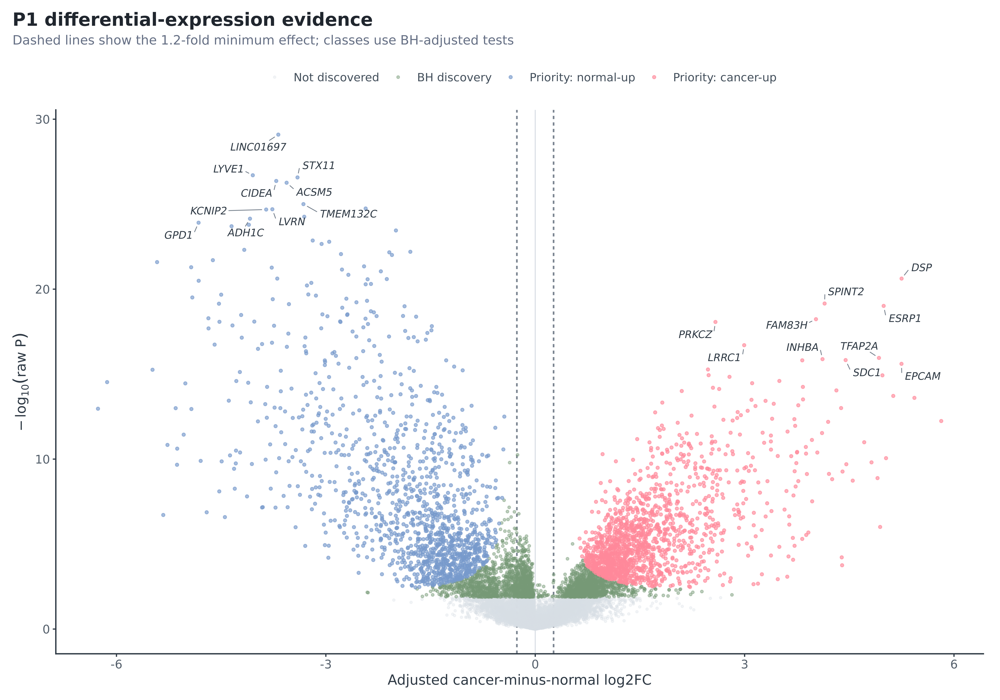
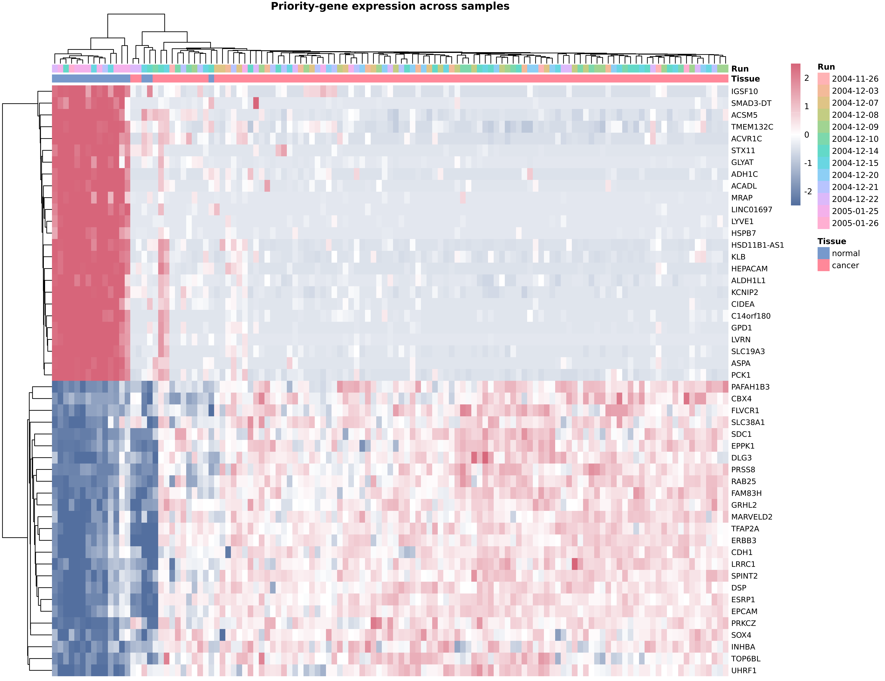
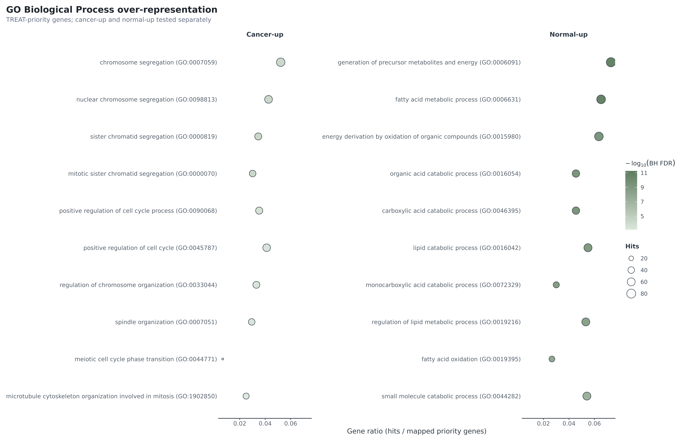
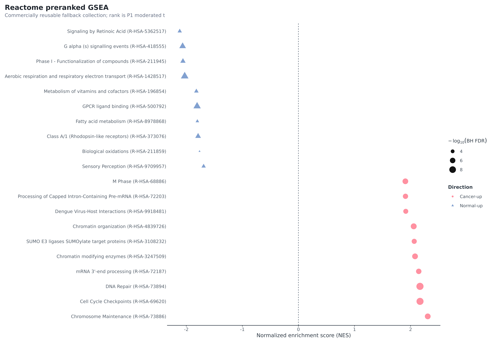
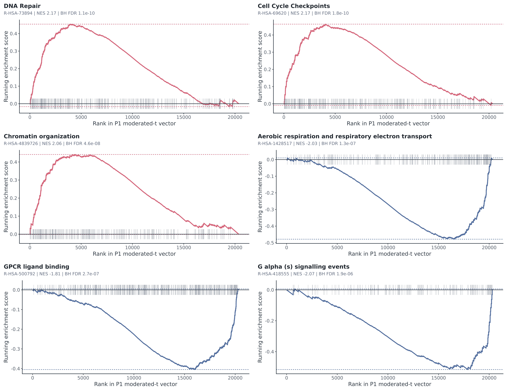

Executive summary
This analysis compares 104 breast cancer biopsies with 17 normal breast tissue samples in GEO GSE42568. It uses the deposited log2 GCRMA matrix and a run-adjusted limma model. The target is an average cancer-minus-normal bulk-tissue expression association—not a causal effect, clinical classifier, prognosis model, or treatment-response model.
The workflow passed 32/32 Scientific QA checks and 13/13 reproducibility guards. A clean rebuild from the checksum-locked official inputs reproduced 10/10 key result tables byte-for-byte. Of 20,357 unique Entrez genes, 5,381 reached moderated BH FDR < 0.05; 2,835 met TREAT BH FDR < 0.05 while directly testing an absolute effect greater than 1.2-fold (1,497 cancer-up; 1,338 normal-up). 2,745 also passed probe and sensitivity interpretation checks.
Release decision: suitable as an auditable portfolio/client-style discovery analysis with explicit limitations. It is not a diagnostic product or evidence that a pathway is activated, causal, or druggable.
Data and boundary
The official GEO record reports 104 pretreatment breast cancer biopsies and 17 normal breast tissues on GPL570 and cites Clarke et al. (PMID 23740839). Normal-tissue donor/source status is not established, so this report never calls them healthy, adjacent, reduction-mammoplasty, or matched controls.
- Matrix SHA-256:
43b93f72f1d81838dcd2a5b6ccc3bc1875e46230dad0d7346236773a99e32b76. - 54,675 probe sets × 121 samples; finite deposited log2 GCRMA signals.
- No second log, re-normalization, imputation or ComBat was applied to the DE response.
- P1:
expression ~ processing_run_proxy + tissue_group; normal reference. - Thirteen run-proxy levels; six mixed levels containing 62 samples.

QC and design
Annotation retained 39,815 eligible probes and resolved 20,357 unique Entrez genes by an outcome-blind representative rule. Four samples triggered multi-category processed-data warnings. They show no gross matrix failure and have no raw-array corroboration, so all remain in P1; a separate 117-sample sensitivity measures influence.

The design is full rank (14/14; residual df 107). Cancer-only run levels do not provide within-run group contrast once their fixed effects are included, explaining why P1 and the 62-sample mixed-run S2 estimates are identical.

| Comparison | n | Spearman | Pearson | Priority sign | Median |effect| ratio |
|---|---|---|---|---|---|
| S1_group_only | 121 | 0.936 | 0.975 | 100.0% | 1.069 |
| S2_mixed_runs | 62 | 1.000 | 1.000 | 100.0% | 1.000 |
| QC_candidate_exclusion | 117 | 0.912 | 0.975 | 100.0% | 1.100 |
| S4_no_trend | 121 | 1.000 | 1.000 | 100.0% | 1.000 |
| S4_group_aware | 121 | 0.962 | 0.993 | 100.0% | 1.006 |
| median_collapse | 121 | 0.874 | 0.902 | 97.0% | 0.960 |
The design traffic light is Green. Removing the normal-heavy 2005-01-25 run retains Spearman 0.953 and every P1-priority direction. Excluding the four reviewed candidates retains every priority direction (Spearman 0.912).
Differential expression
Positive log2FC means higher expression in cancer. The following genes are the fixed ten-smallest-TREAT-FDR set per direction, with stable tie-breaks; familiarity did not affect selection.
| Gene | Entrez | log2FC | Cancer/normal FC | 95% CI | TREAT FDR | Probe | Probe concordance |
|---|---|---|---|---|---|---|---|
| DSP | 1832 | 5.25 | 38.03 | 4.37 to 6.13 | 2.20e-17 | 200606_at | 100% |
| ESRP1 | 54845 | 4.99 | 31.83 | 4.10 to 5.88 | 5.60e-16 | 225846_at | 100% |
| SPINT2 | 10653 | 4.15 | 17.71 | 3.41 to 4.88 | 6.91e-16 | 210715_s_at | 100% |
| FAM83H | 286077 | 4.02 | 16.25 | 3.28 to 4.76 | 4.62e-15 | 226129_at | 100% |
| PRKCZ | 5590 | 2.58 | 5.99 | 2.11 to 3.06 | 3.78e-14 | 202178_at | 50% |
| TFAP2A | 7020 | 4.92 | 30.38 | 3.93 to 5.92 | 2.02e-13 | 204653_at | 100% |
| LRRC1 | 55227 | 2.99 | 7.97 | 2.41 to 3.58 | 2.46e-13 | 218816_at | 100% |
| SDC1 | 6382 | 4.45 | 21.82 | 3.54 to 5.35 | 3.41e-13 | 201286_at | 100% |
| EPCAM | 4072 | 5.25 | 37.99 | 4.17 to 6.33 | 3.45e-13 | 201839_s_at | 100% |
| INHBA | 3624 | 4.12 | 17.34 | 3.28 to 4.95 | 3.78e-13 | 227140_at | 100% |
| LINC01697 | 284825 | -3.68 | 0.08 | -4.15 to -3.22 | 2.06e-23 | 237351_at | 100% |
| LYVE1 | 10894 | -4.05 | 0.06 | -4.60 to -3.50 | 1.20e-21 | 219059_s_at | 100% |
| CIDEA | 1149 | -3.71 | 0.08 | -4.22 to -3.20 | 1.97e-21 | 221295_at | 100% |
| STX11 | 8676 | -3.41 | 0.09 | -3.87 to -2.94 | 1.97e-21 | 235670_at | 100% |
| ACSM5 | 54988 | -3.56 | 0.08 | -4.05 to -3.07 | 2.42e-21 | 220061_at | 100% |
| KCNIP2 | 30819 | -3.86 | 0.07 | -4.41 to -3.30 | 3.42e-20 | 223727_at | 100% |
| LVRN | 206338 | -3.77 | 0.07 | -4.31 to -3.22 | 3.42e-20 | 235382_at | 100% |
| TMEM132C | 92293 | -3.32 | 0.10 | -3.80 to -2.84 | 3.42e-20 | 232313_at | 100% |
| GPD1 | 2819 | -4.82 | 0.04 | -5.54 to -4.11 | 5.86e-20 | 204997_at | 100% |
| ADH1C | 126 | -4.09 | 0.06 | -4.69 to -3.48 | 6.18e-20 | 206262_at | 100% |


Strong cancer-up signals include epithelial/adhesion-associated DSP, EPCAM, ESRP1, SPINT2, and TFAP2A. Prominent normal-up signals include LYVE1, CIDEA, ACSM5, GPD1, ADH1C, and ACADL. These are cohort-level bulk-tissue patterns and cannot distinguish tumor-cell regulation from tissue-composition shifts.
Functional enrichment
GO ORA uses direction-specific priority genes and resource-specific tested-and-annotated backgrounds (GO BP: 15,588 genes). Reactome uses 10,178 tested genes with human Reactome annotation. GSEA begins with all 20,357 P1 moderated-t statistics.
| Direction | GO BP term | ID | Hits | Set size | BH FDR |
|---|---|---|---|---|---|
| cancer_up | chromosome segregation | GO:0007059 | 71 | 416 | 4.29e-05 |
| cancer_up | nuclear chromosome segregation | GO:0098813 | 58 | 310 | 4.29e-05 |
| cancer_up | sister chromatid segregation | GO:0000819 | 47 | 226 | 4.29e-05 |
| cancer_up | mitotic sister chromatid segregation | GO:0000070 | 41 | 186 | 4.29e-05 |
| cancer_up | positive regulation of cell cycle process | GO:0090068 | 48 | 251 | 2.03e-04 |
| cancer_up | positive regulation of cell cycle | GO:0045787 | 56 | 319 | 3.27e-04 |
| normal_up | generation of precursor metabolites and energy | GO:0006091 | 85 | 455 | 5.51e-12 |
| normal_up | fatty acid metabolic process | GO:0006631 | 76 | 378 | 5.51e-12 |
| normal_up | energy derivation by oxidation of organic compounds | GO:0015980 | 74 | 397 | 1.78e-10 |
| normal_up | organic acid catabolic process | GO:0016054 | 53 | 233 | 1.78e-10 |
| normal_up | carboxylic acid catabolic process | GO:0046395 | 53 | 233 | 1.78e-10 |
| normal_up | lipid catabolic process | GO:0016042 | 64 | 323 | 3.98e-10 |

Cancer-up ranks emphasize chromosome segregation, cell-cycle, chromatin and DNA-repair programs. Normal-up ranks emphasize fatty-acid metabolism, aerobic respiration and GPCR-related programs.
| Direction | Reactome set | ID | NES | Set size | BH FDR |
|---|---|---|---|---|---|
| cancer_up | DNA Repair | R-HSA-73894 | 2.17 | 305 | 1.14e-10 |
| cancer_up | Cell Cycle Checkpoints | R-HSA-69620 | 2.17 | 270 | 1.79e-10 |
| cancer_up | Chromatin organization | R-HSA-4839726 | 2.06 | 253 | 4.58e-08 |
| cancer_up | Chromatin modifying enzymes | R-HSA-3247509 | 2.08 | 238 | 8.37e-08 |
| cancer_up | Chromosome Maintenance | R-HSA-73886 | 2.31 | 117 | 8.40e-08 |
| cancer_up | M Phase | R-HSA-68886 | 1.91 | 359 | 1.04e-07 |
| normal_up | Aerobic respiration and respiratory electron transport | R-HSA-1428517 | -2.03 | 240 | 1.25e-07 |
| normal_up | GPCR ligand binding | R-HSA-500792 | -1.81 | 419 | 2.65e-07 |
| cancer_up | mRNA 3'-end processing | R-HSA-72187 | 2.15 | 145 | 3.20e-07 |
| cancer_up | Processing of Capped Intron-Containing Pre-mRNA | R-HSA-72203 | 1.91 | 282 | 6.07e-07 |
| cancer_up | SUMO E3 ligases SUMOylate target proteins | R-HSA-3108232 | 2.07 | 175 | 1.01e-06 |
| cancer_up | Dengue Virus-Host Interactions | R-HSA-9918481 | 1.91 | 257 | 1.57e-06 |


Enrichment identifies concentration in the statistical ranking; it does not prove activation, causation or therapeutic vulnerability. Related GO terms overlap and are not independent findings.
Licence decisions
- GO and Reactome completed with pinned sources and attribution; Reactome data licence.
- KEGG:
KEGG_NOT_RUN_LICENSE_GATE; no API, definition, cache or map used. - MSigDB Hallmark: not downloaded or redistributed because commercial-use review was unconfirmed.
- Reactome is explicitly the licensed GSEA fallback.
Limitations
- Normal-tissue provenance, age and pairing identifiers are absent.
- This is an unpaired, observational, cross-sectional bulk-tissue analysis; composition can drive signals.
- Run is partially confounded with group even though the coefficient is estimable and sensitivities are Green.
- Processed data cannot provide CEL-level NUSE/RLE, degradation, image-artifact or alternative-preprocessing checks.
- Cancers span histology, grade and ER status; v1 intentionally estimates a broad average.
- No external validation cohort was added to this bounded delivery.
Deliverables and references
Complete local-workspace results are in results/tables/; F01–F15 each have PDF, PNG, SVG, caption and source TSV. The public portfolio edition intentionally omits large/generated source artifacts and has its own acceptance record in docs/PUBLIC_PORTFOLIO_ACCEPTANCE.md.
References: GEO GSE42568; Clarke et al., Carcinogenesis 2013 (doi:10.1093/carcin/bgt208); Ritchie et al., limma (doi:10.1093/nar/gkv007); Subramanian et al., GSEA (PMC1239896); GO citation policy; Reactome licence.